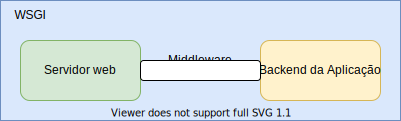
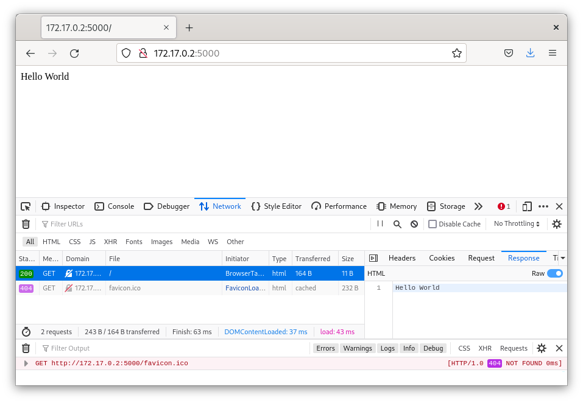
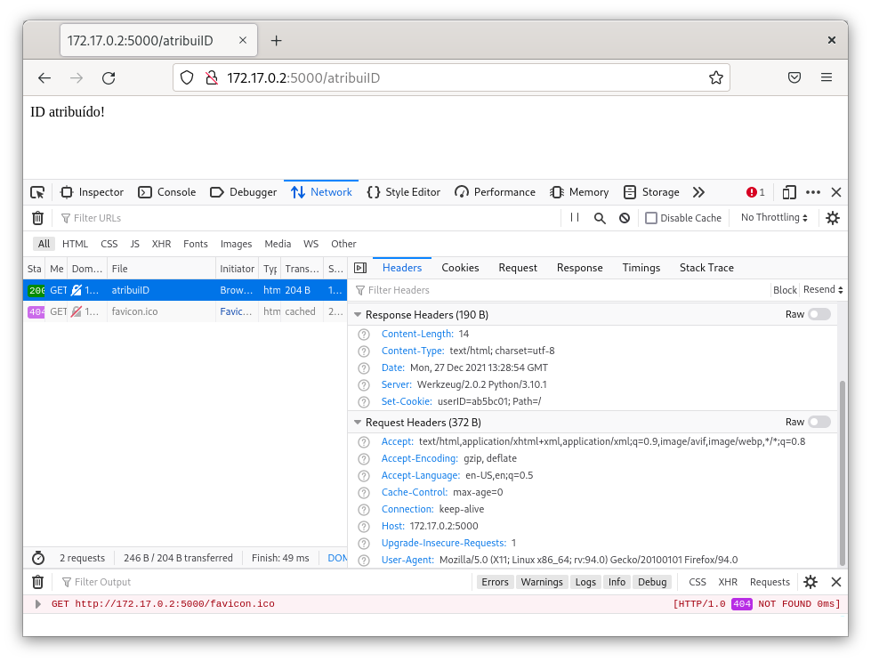
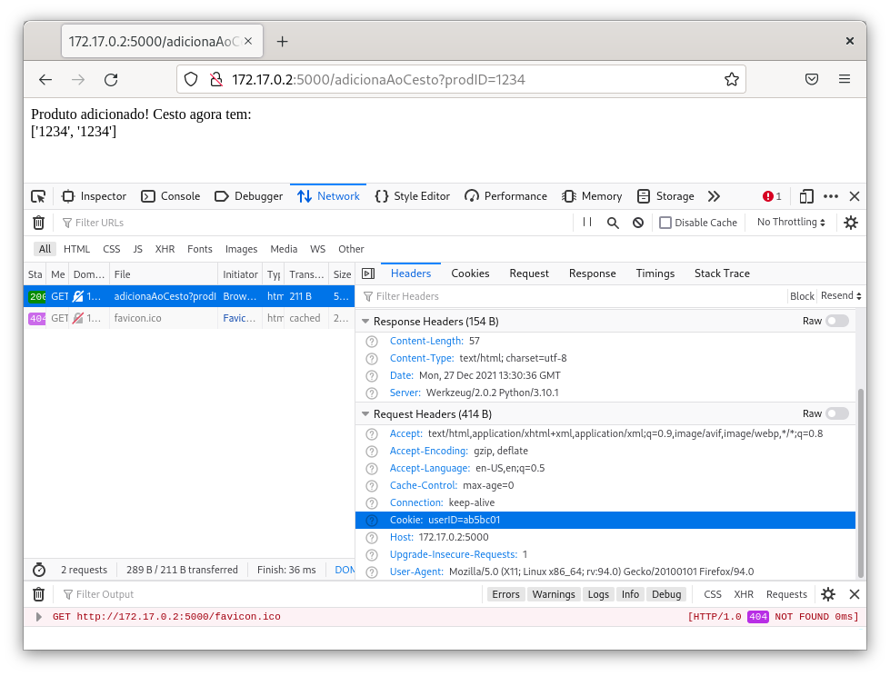
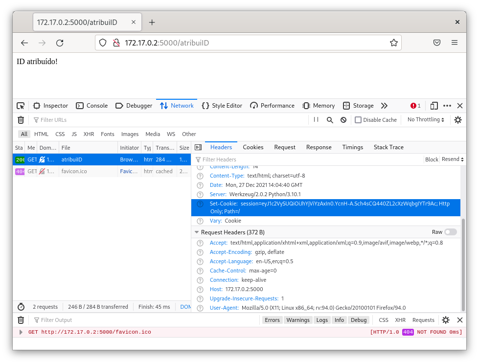
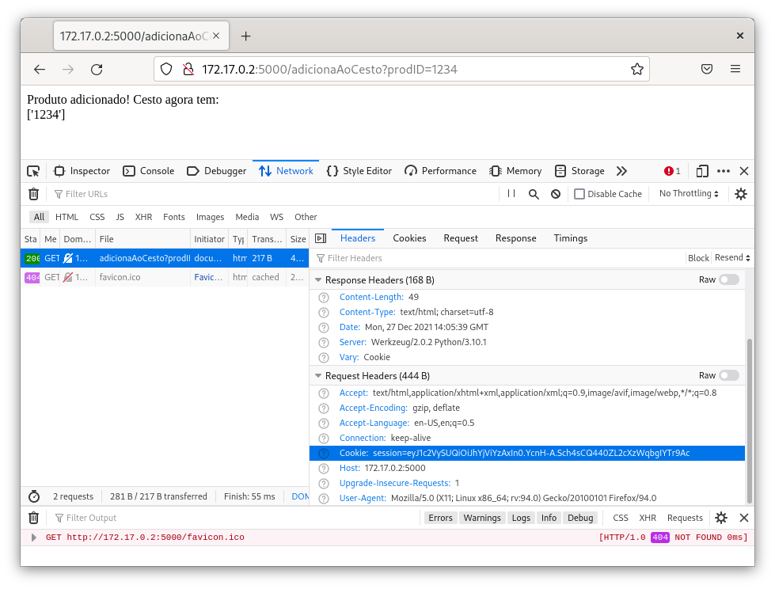

Universidade Atlântica
Flask
Programação Avançada
Universidade Atlântica
Programação Avançada
Fernanda Passos

from flask import Flask # Importa-se a biblioteca do Flask
app = Flask(__name__) # Cria-se uma "Aplicação Flask"
@app.route("/") # O decorator app.route() associa a função ao caminho "/" no servidor
def hello():
return "Hello World" # Valor retornado é simplesmente uma string enviada como (corpo) da resposta HTTP.
if __name__ == "__main__":
app.run(debug=False)hello()) que sempre retorna "Hello World"/ no servidor web.
/, hello() é executada, retornando a string ao cliente.# python HelloWorld.py
* Serving Flask app 'HelloWorld' (lazy loading)
* Environment: production
WARNING: This is a development server. Do not use it in a production deployment.
Use a production WSGI server instead.
* Debug mode: off
* Running on http://127.0.0.1:5000/ (Press CTRL+C to quit)app.run().app.run(debug=False, port=6000)flask:
script para app.py.flask run com o parâmetro --port.flask run --port 6000host do método app.run().
app.run(debug=False, host=0.0.0.0)--host do comando flask:
flask run --host 0.0.0.0
GET em /.from flask import Flask
app = Flask(__name__)
@app.route("/cadeiras")
def alunos():
return "Programação avançada, Linguagem de Programação, Estatística, Redes de Computadores"
@app.route("/alunos")
def hello():
return "António, Carla, Daniel, João, Paula, Tiago"
if __name__ == "__main__":
app.run(debug=False)route(): associa caminho a função no código Flask.
from markupsafe import escape
@app.route("/<name>/inbox")
def inbox(name):
# conteudoInbox = ...
return f"Conteudo do inbox do usuario {escape(name)}: ..."
@app.route("/<name>/spam")
def spam(name):
# conteudoSpam = ...
return f"Conteudo da caixa de spam do usuario {escape(name)}: ..."route(), definimos templates de caminhos contendo o modificador <name>.
/fernanda/spam e /fernanda/inbox são automaticamente mapeados para as funções certas.fernanda é mapeado para o parâmetro name das funções.Importante!
escape() da biblioteca markupsafe.
/login/12345 funciona, mas a /login/fernanda não.
| Modificador | Significado |
|---|---|
int |
Números inteiros positivos |
float |
Números reais positivos |
string |
Qualquer texto sem barras |
path |
Qualquer texto mesmo com barras |
uuid |
Strigs no formato de UUID |
//teste/minhaFuncao/./teste/minhaFuncaof2 só é acessível pelo caminho /teste/minhaFuncao2./teste/minhaFuncao2 quanto para /teste/outroNome mapeadas para f().url_for().nome=valor.GET.GET.from flask import request
@app.route('/alunos', methods=['GET', 'POST'])
def alunos():
if request.method == 'POST': # Objeto build-in request contém informações sobre a requisição
return cadastraAluno() # Se é um POST, cadastramos um novo aluno
else:
return listaAlunos() # Se é um GET, listamos alunos cadastradosstatic: conteúdos totalmente estáticos.
templates: modelos preenchidos com informações geradas dinamicamente.
<body>
<head></head>
<body>
<table>
<tr><th>Operação</th><th>Resultado</th></tr>
<tr>
<td>{{ x }} X {{ y }}</td>
<td>{{ multiplicacao }}</td>
</tr>
<tr>
<td>{{ x }} / {{ y }}</td>
<td>{{ divisao }}</td>
</tr>
<tr>
<td>{{ x }} + {{ y }}</td>
<td>{{ soma }}</td>
</tr>
<tr>
<td>{{ x }} - {{ y }}</td>
<td>{{ subtracao }}</td>
</tr>
</table>
</body>
</body>templates/calculadora.htmlif...else.
<body>
<head></head>
<body>
<table>
<tr><th>Operação</th><th>Resultado</th></tr>
<tr>
<td>{{ x }} X {{ y }}</td>
<td>{{ multiplicacao }}</td>
</tr>
{% if divisao %}
<tr>
<td>{{ x }} / {{ y }}</td>
<td>{{ divisao }}</td>
</tr>
{% endif %}
<tr>
<td>{{ x }} + {{ y }}</td>
<td>{{ soma }}</td>
</tr>
<tr>
<td>{{ x }} - {{ y }}</td>
<td>{{ subtracao }}</td>
</tr>
</table>
</body>
</body>from flask import Flask, render_template
app = Flask(__name__)
@app.route("/todas/<float:x>/<float:y>")
def todas(x, y):
if y == 0:
return render_template('calculadora.html', x=x, y=y,
multiplicacao=x*y,
soma=x+y,
subtracao=x-y)
else:
return render_template('calculadora.html', x=x, y=y,
multiplicacao=x*y,
divisao=x/y,
soma=x+y,
subtracao=x-y)
if __name__ == "__main__":
app.run(debug=False)for.from flask import Flask, render_template
app = Flask(__name__)
@app.route("/todas/<float:x>/<float:y>")
def todas(x, y):
resultados = {
"x": x*y,
"+": x+y,
"-": x-y
}
if y != 0:
resultados["/"] = x/y
return render_template('calculadora_v3.html', x=x,
y=y, resultados=resultados)
if __name__ == "__main__":
app.run(debug=False)calculadora.css:calculadora.css no diretório static.url_for().Nota
url_for não é estritamente necessário./static/calculadora.css funcionaria na maioria dos casos.?chave=valor&https://www.google.com/search?client=firefox-b-d&q=flask
client: tem valor firefox-b-dq: tem valor flaskrequest.
request.args./calc?x=3&y=2&op=*from flask import Flask, request
app = Flask(__name__)
@app.route("/calc")
def calculadora():
x = float(request.args.get('x'))
y = float(request.args.get('y'))
op = request.args.get('op')
if op == '+':
res = x + y
elif op == '-':
res = x - y
elif op == '*':
res = x * y
else:
res = x / y
return f"{x} {op} {y} = {res}"
if __name__ == "__main__":
app.run(debug=False)POST.request.formrequest.formfrom flask import Flask, request, render_template
app = Flask(__name__)
def verificaLogin(username, password):
if username == "pedro" and password == "123456":
return True
return False
@app.route("/login", methods=['GET', 'POST'])
def login():
if request.method == 'POST':
if verificaLogin(request.form['username'],
request.form['password']):
return 'Login bem sucedido!'
else:
return 'Nome de usuário ou palavra-passe inválidos!'
return render_template('login.html')
if __name__ == "__main__":
app.run(debug=False)<body>
<head></head>
<body>
<h1>Bem-vindo ao sistema!</h1>
Por favor, forneça suas credenciais:<br>
<form action="/login" method="post">
<label for="username">Nome de Usuário:</label><br>
<input type="text"
id="username"
name="username" value=""><br>
<label for="password">Palavra-passe:</label><br>
<input type="password"
id="password"
name="password" value=""><br><br>
<input type="submit" value="Enviar">
</form>
</body>post para get no formulário?Problema
(nome, valor).Note
make_respose().set_cookie()request.from flask import Flask, request, make_response
app = Flask(__name__)
cestos = {}
@app.route("/adicionaAoCesto")
def adicionaAoCesto():
prodID = request.args.get('prodID')
userID = request.cookies.get('userID')
cestos[userID].append(prodID)
return f"Produto adicionado! Cesto agora tem:<br> {cestos[userID]}"
@app.route("/atribuiID")
def atribuiID():
novoID = 'ab5bc01'
cestos[novoID] = []
resp = make_response('ID atribuído!')
resp.set_cookie('userID', novoID)
return resp
if __name__ == "__main__":
app.run(debug=False)/atribuiID
/adicionaAoCesto


session é disponibilizado para todos os métodos, identificando a sessão correspondente à requisição.
session e lê-los em outras requisições da mesma sessão.
session é um dicionário.session são salvos como cookies.
from flask import Flask, request, session
app = Flask(__name__)
app.secret_key = b'((s23e__#i54e/*!'
cestos = {}
@app.route("/adicionaAoCesto")
def adicionaAoCesto():
prodID = request.args.get('prodID')
userID = session['userID']
cestos[userID].append(prodID)
return f"Produto adicionado! Cesto agora tem:<br> {cestos[userID]}"
@app.route("/atribuiID")
def atribuiID():
novoID = 'ab5bc01'
cestos[novoID] = []
session['userID'] = novoID
return 'ID atribuído!'
if __name__ == "__main__":
app.run(debug=False)session é obrigatório definir uma chave secreta.
app.secret_key.Session em Ação

from flask import Flask, request, render_template, session, redirect, url_for
app = Flask(__name__)
app.secret_key = b'((s23e__#i54e/*!'
def verificaLogin(username, password):
if username == "pedro" and password == "123456":
return True
return False
@app.route("/login", methods=['GET', 'POST'])
def login():
if request.method == 'POST':
if verificaLogin(request.form['username'],
request.form['password']):
session['username'] = request.form['username']
return redirect(url_for('principal'))
else:
return 'Nome de usuário ou palavra-passe inválidos!'
return render_template('login.html')
@app.route("/")
def principal():
if 'username' in session:
return f"Seja bem-vindo, {session['username']}"
else:
return redirect(url_for('login'))
if __name__ == "__main__":
app.run(debug=False)jsonify.